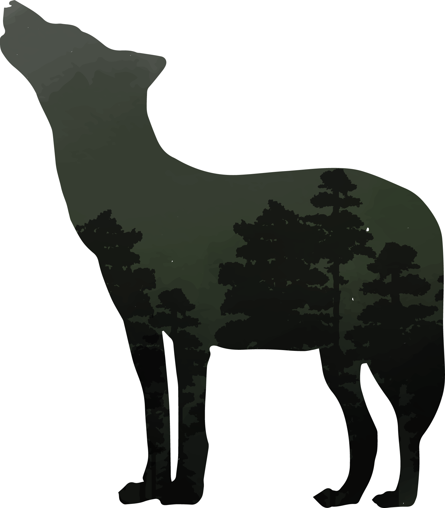
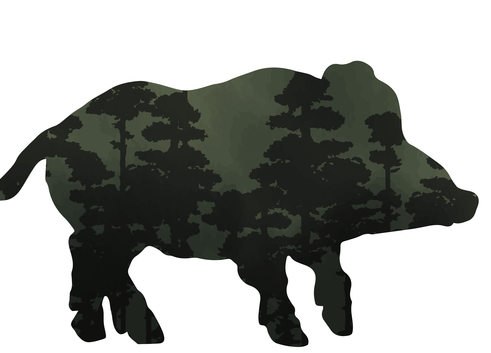
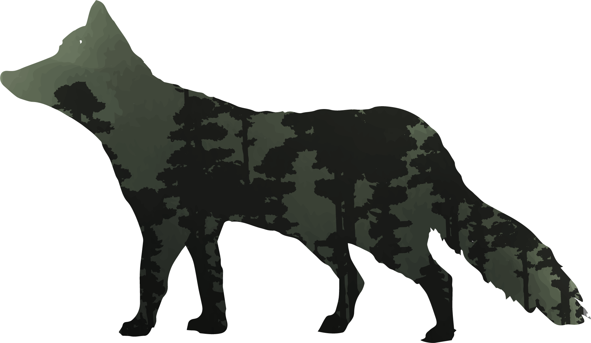
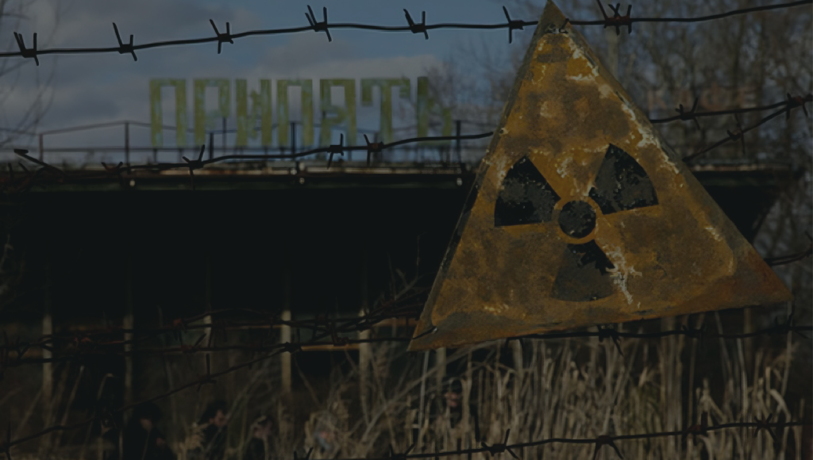
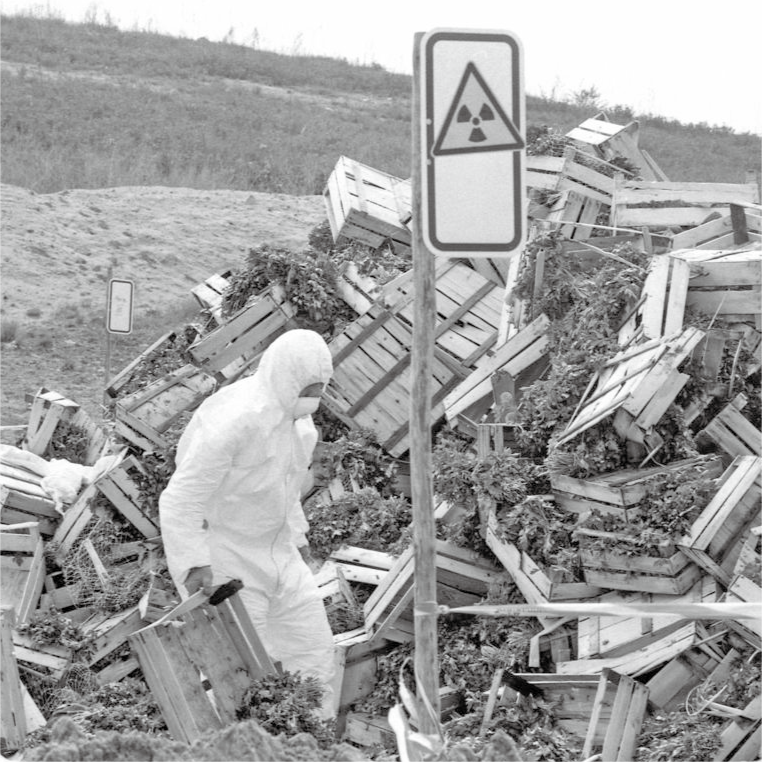
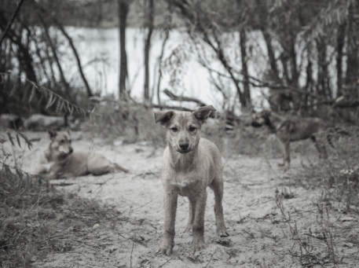
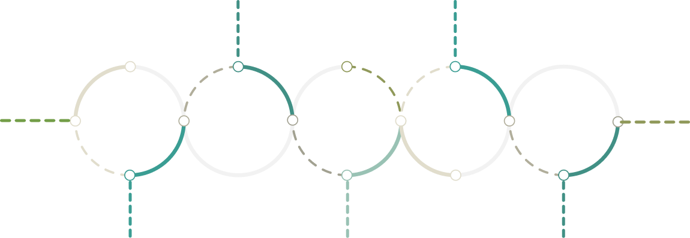
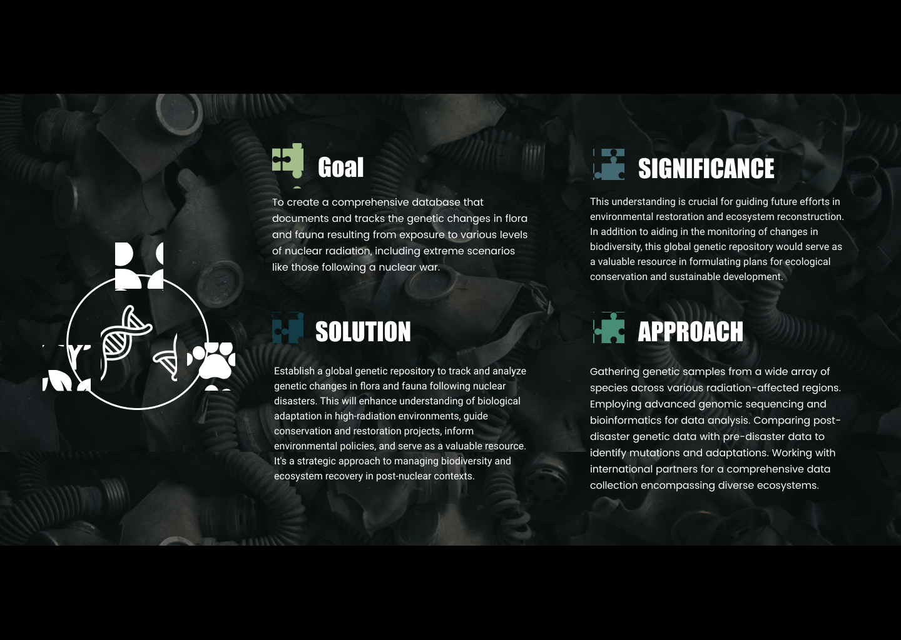

WHAT DOES A POST-NUCLEAR WORLD LOOK LIKE?



EMERGING FUTURES
ENGRGY SYSREM
SURVIVING FALLOUT
EMERGING FUTURES
ENGRGY SYSREM
SHAPING RENNEWAL
EMERGING FUTURES
ENGRGY SYSREM
NAVIGATING TOMORROW'S REBIRTH

What happens after a nuclear disaster?
Can we build something better?
Is nature best left to heal on its own?
That is why we are delving into books, data,
history, articles, and the depths of the internet
to ponder: what has happened (Chernobyl); what
could happen (Hypothetical nuclear weapon); and
what we can do (Potential solution)?


BACKGROUND
Explore the fallout from the Chernobyl catastrophe,
an important point in the history of post-nuclear energy.
The aftermath of this terrible incident echoes across time,
providing important insights into the intricate interplay
between environmental changes and human activity. Examine
the long-term effects and consider how resilient nature is
against nuclear disaster.


Pre-Disaster Normal Operation
Initial Reduction for Safety Test
Sudden Power Surge
Explosion and Fire
Post-Diaster
Reduced. The power level dropped more than intended
Effectively dropped to zero as the reactor was destroyed
Stable energy output level, typically around 3200 MWth
Initially increased reactivity in the lower part of the reactor core
The reactor was non-operational, with an energy output of zero
Value of Radiation Chart
We employed the StyleGAN3 model to train on images of flowers, aiming to achieve a visually distorted effect. This distortion serves as a symbolic representation of the impact of nuclear power on plant life. The altered imagery reflects the potential deformities and mutations that plants might undergo in environments affected by nuclear radiation.
